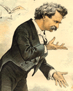
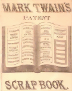
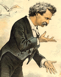
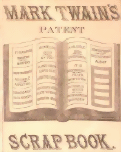
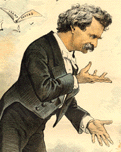
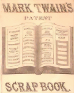

 
 
|
Most of the newspaper reporters who covered MT's live performances commented on his "inimitable" or "unmistakable" voice. Early in his career a very few thought it was distracting, but the rest found it an irresistible and vital part of the humorous spell that he cast over his audiences. Reviewers usually referred to it as a "drawl," and emphasized the slowness of MT's delivery. According to one (who had his own flair for tall tales) he spoke at the rate of three words a minute. Sam Clemens may have been embarrassed about his way of talking. To torment the autobiographical narrator of "Facts Concerning the Recent Carnival of Crime in Connecticut," for example, Conscience speaks to him in "an exasperating drawl" -- "there is nothing I am quite so sensitive about," admits that narrator, "as a mocking imitation of my drawling infirmity of speech." As Mark Twain the humorist, however, Clemens could use that voice, even exaggerating its "infirmities," to keep audiences in a receptive mood. I wish we could hear it. In the 1860s all we would have needed was 25 or 35 cents (with no extra charge for reserved seats) to listen to one of MT's lectures. Even in the mid-1890s, it would only have taken 75 cents or a dollar. To MT himself, the relationship between a live speech and the written transcript of it was about the same as the relationship between a live person and a corpse. But thanks to the help of several of the modern performers who've perfected careful and loving imitations of it, you can at least get some good ideas about what MT's voice sounded like. The sound files below are available in two formats, WAVE and Real
Audio. Most browsers are already equipped to play "wav" files; clicking
the black and white icon will download files formatted for WAVE. If
you have a Real Audio player, you can click on the red and white
icon to download a smaller "ra" file. First, the work of McAvoy Layne, who
has performed "Mark Twain" in almost as many places around the world as
Sam Clemens did, and was featured as MT on A&E's Biography, and
the Discovery Channel's documentary on Adventures of Huckleberry
Finn. [Copyright 1995, McAvoy Layne, used by permission; Audio Editions produces two of McAvoy Layne's performances as MT: Wild Humorist of the Pacific Slope and Letters From the Earth.] Second, a couple samples of MT's voice as recreated by Richard Henzel, a Chicago-based actor who has impersonated Twain over a thousand times in scores of sites in the United States, Canada and Great Britain since the mid-1960s: [Excerpted from MARK TWAIN IN PERSON by Richard Henzel, adapted from the writings of Samuel L. Clemens. Copyright 1997 Richard Henzel All Rights Reserved.] Next, Dr. Bill Cosgrove, from North Dakota, who has been performing "An
Evening with Mark Twain" since 1983. His version is based on the way MT
sounded when he was about 70 years old: [Recorded especially for this site by Bill Cosgrove, Chair, Dept. of English, North Dakota State University] Finally, with a couple of pithy aphorisms, is Jim Clark, a MT
impersonator from Missouri: [Used by courtesy of Jim Clark & Roger Greer; for more of Clark as MT, see An Evening with Mark Twain] |
 